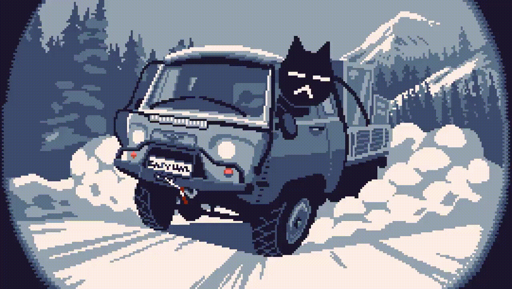
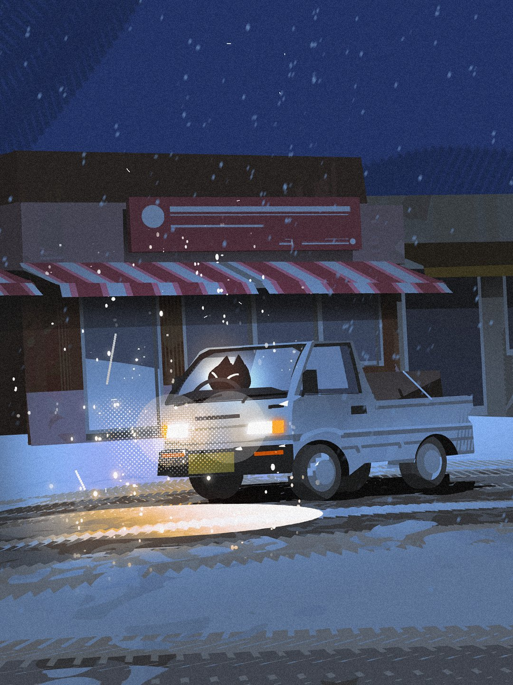

Carregando entrega...
Historia

A historia de Easy Delivery Co a primeira vista parece simples, mas esconde segredos que irar surpreender.
a proposta do jogo é simples: entregar incomendas de um local para outro.
porem o jogo contem missões secundárias que revela sobre a historia do jogo.
mas o que torna o jogo tão impactante e o fato dos NPCs saberem que estão em um mundo virtual, e que eles querem que você Reseta o jogo.
a historia do jogo é meia confusa a primeira vista, e a cada missão secundária que você completa, mais sobre a historia do jogo é revelada.
o jogo atualmente contem 3 finais diferentes mais com a mesma proposta de reiniciar o jogo.
Dicas

1. Fique atento as missões secundárias, elas revelam mais sobre a historia do jogo.
2. Fique atento as falas dos NPCs, eles podem dar dicas sobre a historia do jogo.
3. Antes de passar para outros mundos leve pelo menos R$100 para comprar itens para as missões secundárias.
4. Sempre leva pelo menos 1 café, 1 chá, 1 energetico, o café te darar mais energia, o chá te darar um efeito de aquecimento por um tempo, isso ajudar para que vc não morrar congelado, o energetico te darar pouca energia, e pouca energia podera te atrapalhar nas entregas.
Mods

Mods que podem ser instalados para melhorar a experiência de jogo.
O easy delivery co tem alguns mods que podem ser úteis para melhorar a experiência de jogo.
EasyDeliveryAPI
Mod melhora adiciona mais saves, melhora a configuração do jogo e etc.
Weather Forecast
O mod informa sobre o clima.
SebTweaks
O mod adiciona um sistema de configuração melhorado o jogo, podendo facilita ou dificulta a jogabilidade.
SebBinds
O mod adiciona binds personalizados para melhorar a experiência de jogo.
SebTruck
O mod adiciona Km/h no velocímetro do caminhão, facilitando a visualização da velocidade do caminhão e etc.
SebLogiWheel
O mod adiciona uma compatibilidade com volante para o jogo, assim tendo uma imersão melhor.
Tweaks
O mod adiciona um sistema de configuração melhorado o jogo.
RealTime
O mod adiciona um sistema de clima em tempo real ao jogo.
